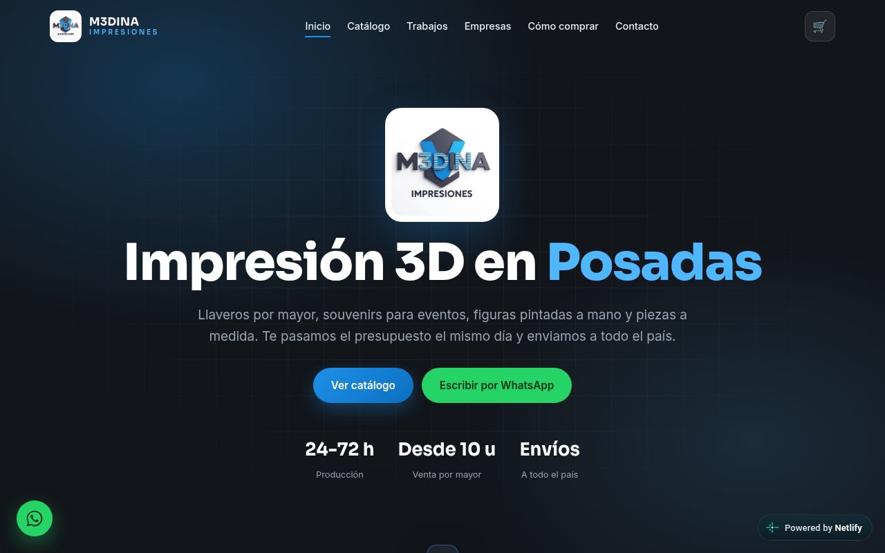
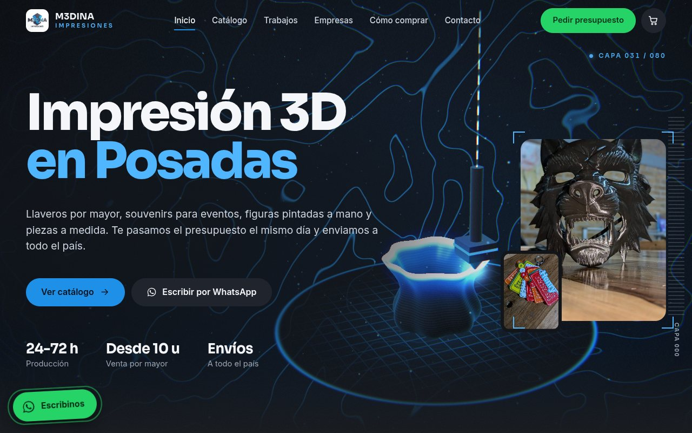
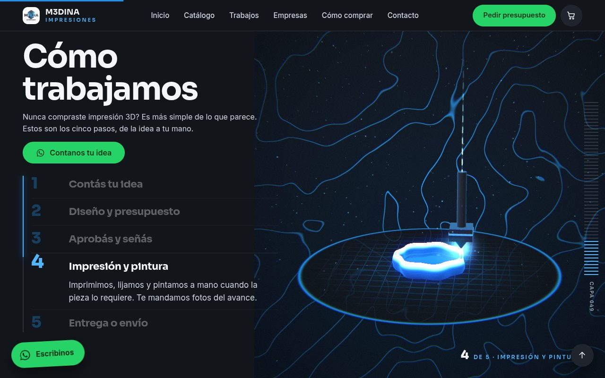
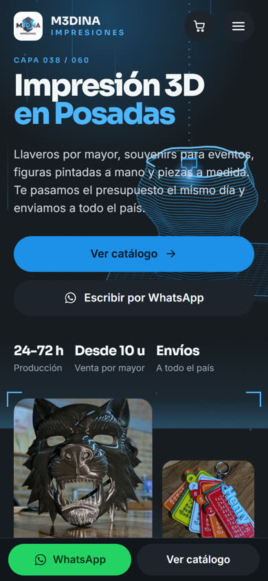

Bots de WhatsApp con IA.
Responden lo repetitivo, toman datos y agendan. Cuando la consulta lo necesita, te pasan la conversación para que sigas vos.
Probalo arriba, en vivo Ver cómo queda en tu rubroSoy Mariano, especialista en automatización con IA. Hago que WhatsApp, tus planillas y tus sistemas trabajen solos: respuestas, turnos, pedidos y reportes. Arrancamos con un diagnóstico gratis de tu negocio.
¿Hacen envíos?
Sí, en Posadas: hasta 3 km es gratis. ¿Te tomo el pedido?
Probá escribirle: pedí, sacá un turno o preguntá por stock. Negocios y datos de ejemplo.
Arranco por lo que más tiempo te quita: las consultas repetidas y las tareas manuales. La web y la tienda suman cuando el negocio ya trabaja solo.
Responden lo repetitivo, toman datos y agendan. Cuando la consulta lo necesita, te pasan la conversación para que sigas vos.
Probalo arriba, en vivo Ver cómo queda en tu rubroTareas que hoy hacés a mano pasan a hacerse solas: planillas que se completan, reportes que llegan armados y paneles de pedidos, turnos o stock hechos para tu forma de trabajar.
Catálogo con carrito que arma el pedido y te lo manda por WhatsApp, o tienda con cobro online si tu caso lo necesita.
Un sitio claro, rápido de leer y con una acción visible: que te escriban. Textos, diseño, programación y publicación, con el dominio a tu nombre.
Mové los valores según tu negocio y mirá cuánto tiempo por mes podrías dejar de perder en tareas repetitivas.
Podrías recuperar
0horas por mes
≈ 0 jornadas de 8 horas
Estimación orientativa. Supone que el asistente resuelve el 80 % de las preguntas repetidas y que la automatización ahorra el 60 % de las tareas manuales, con 26 días hábiles por mes. El número real sale del diagnóstico.
Antes de hablar de precios, entiendo cómo funciona tu negocio. Así no pagás por algo que no necesitás.
Con JavaScript activado acá aparece un cotizador de rango orientativo. Sin él, pedime el diagnóstico directo por WhatsApp.
Web, asistente y panel pensados para cómo se atiende en cada negocio. Elegí el tuyo.
Conversación tipo: Hola, ¿tienen turno para esta semana?
Conversación tipo: Busco un departamento de dos ambientes en el centro.
Conversación tipo: ¿Tienen mesa para cuatro el sábado a la noche?
Conversación tipo: ¿Hacen envíos a Oberá? ¿Cuánto sale?
Es el rubro que mejor conozco: mirá el caso M3DINA.
Pedir este packArrastrá para ver el antes y el después de mi taller de impresión 3D.


Antes: sitio originalDespués: rediseñoMi propio taller de impresión 3D en Posadas. Rediseñé el sitio para que se vea el oficio: una pieza 3D que se construye sola, un proceso que avanza con el scroll y un catálogo que arma el pedido por WhatsApp.


Webs, bots, automatizaciones y herramientas de datos. Cada proyecto tiene su ficha y una demo que podés probar en el navegador.
Catálogo digital y experiencia de consulta para una tienda de electrónica, con una base de más de 3.400 productos.
Ver ficha y demo Entregado a clienteExperiencia web gastronómica y una interfaz de autoservicio pensada para usarse como tótem.
Ver ficha y demo Entregado a clienteSitio hotelero con una experiencia de consulta y reservas apoyada en datos e integraciones configurables.
Ver ficha y demo Entregado a clienteTablero para visualizar datos de facturación reales y facilitar su análisis por un estudio o profesional contable.
Ver ficha y demo MVP funcionandoBase de conocimiento con búsqueda y conversación sobre documentos, diseñada para recuperar información con referencias a sus fuentes.
Ver ficha y demo MVP funcionandoMVP de gestión de contactos y seguimiento comercial conectado a conversaciones de WhatsApp.
Ver ficha y demoSe empieza por lo gratis y se sigue solo si tiene sentido para vos.
Valores «desde» en USD, como referencia. El precio cerrado sale del diagnóstico y te llega por escrito.
desde USD250+ USD 40/mes
etapa 1 desde USD1.200+ USD 80/mes
desde USD600
desde USD300
desde USD1.200
desde USD25/mes
Los costos de terceros (hosting, dominio, WhatsApp Business, herramientas de IA) no están incluidos y se explican aparte antes de empezar.
Siempre recibís una propuesta con tres opciones: una base, una recomendada y una completa, cada una con alcance, plazo y precio.
Depende del alcance. Arriba tenés valores «desde» y un cotizador de rango. El precio cerrado sale del diagnóstico gratis y te llega por escrito, con alcance y plazos.
Instagram y WhatsApp son canales que no controlás: cambian las reglas y tu información queda repartida. Una web es tu dirección propia, junta lo que hacés, tus precios y cómo contactarte, y la encuentra quien te busca.
No prometo posiciones en Google ni cantidad de ventas. Sí que quede claro y listo para convertir consultas en conversaciones.
Sí. Hablamos en simple y por WhatsApp. No te pido nada técnico: me alcanza con tu logo, algunas fotos y cómo te escriben hoy tus clientes. Lo demás lo resuelvo yo y te lo explico con ejemplos.
En una web, sí: pago único, y el dominio y las cuentas quedan a tu nombre. En asistentes de WhatsApp y apps el abono existe porque son sistemas vivos: cambian las plataformas, las herramientas de IA y tus propias respuestas. Sin abono, ese mantenimiento queda de tu lado.
Por eso el diagnóstico es gratis y la propuesta llega por escrito, con tres opciones. Ves el diseño antes de que programe y probás una versión online mientras se arma. Si algo no funciona como quedó acordado, lo corrijo sin costo adicional.
Una landing puede estar en pocos días; un sitio completo suele llevar entre una y tres semanas; un asistente de WhatsApp, entre dos y cuatro. Son tiempos orientativos: dependen de qué tan rápido tengamos textos, fotos y respuestas.
Habitualmente la mitad al empezar y la mitad al entregar, por transferencia o Mercado Pago. Para clientes del exterior, por Wise u otro medio que acordemos. Si necesitás factura, lo vemos según tu situación.
No. Responde lo repetitivo, toma datos y agenda; cuando la consulta lo necesita, te pasa la conversación para que sigas vos. Según el uso, WhatsApp Business puede tener costos propios; te los explico antes de empezar.
Sí. Trabajo en español, italiano e inglés, desde Posadas (UTC−3), y acuerdo horarios de reunión que te queden cómodos. Cotizo en USD o EUR.
Diseño asistentes, flujos y paneles con inteligencia artificial para que los negocios dejen de perder horas en tareas repetitivas. Vivo en Posadas, Misiones, y trabajo con clientes de Argentina, Italia y otros países, en español, italiano e inglés.
También diseño las webs que presentan esas soluciones. Y tengo mi propio taller de impresión 3D, M3DINA, donde aplico lo mismo que ofrezco.
Formación
Hablamos claro, sin vueltas ni tecnicismos.
Empezamos con lo mínimo que funciona y crecemos con resultados.
Dominio, cuentas y accesos quedan a tu nombre.
La forma más rápida es WhatsApp. Escribime tu rubro y qué te gustaría resolver, y te respondo con los próximos pasos.
Posadas, Misiones (UTC−3) · ahora son las --:--